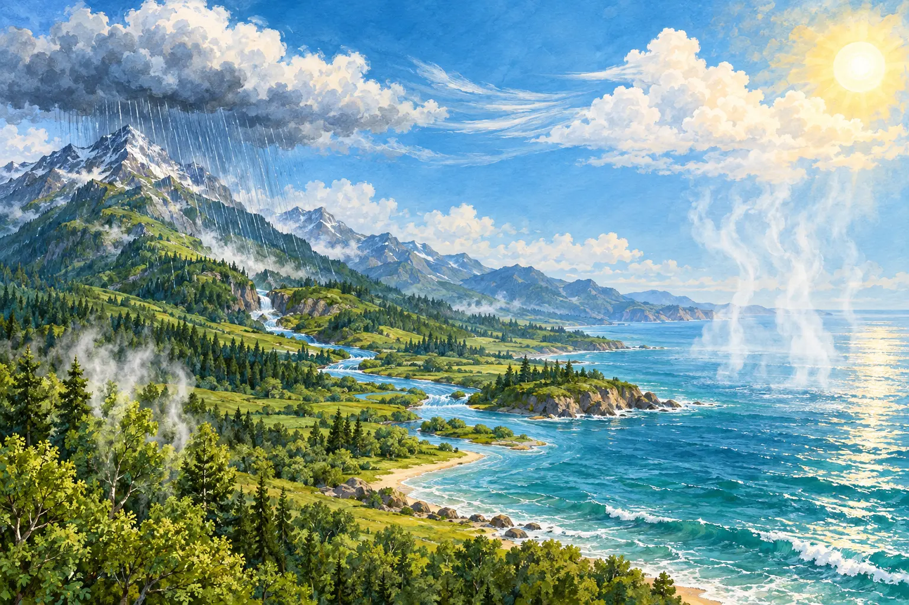

Explore • Observe • Recall
Water Cycle Explorer
Follow water as it moves through air, land, plants, and oceans. Then see if you can label the pathways yourself.
One planet. Water always moving.Choose a pathway to learn what happens.

Notice: Water can take different paths. Some flows across the land, while plants return some of it to the air.
No account or saved student data. Works on touchscreens, with a mouse, or by keyboard.